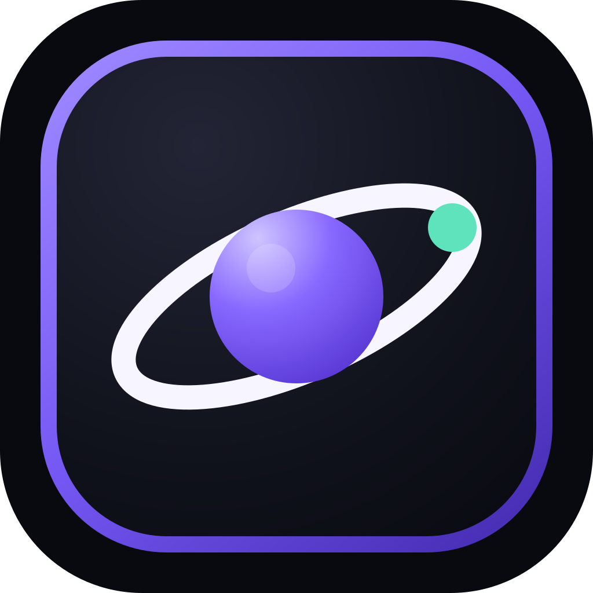

Native OBS control
Start streams, switch scenes, control recording and mute individual audio sources.

OrbDeckYour phone is the hardware.
Turn any phone or tablet into a fast, customizable command deck for OBS Studio, Windows, games and media.
One deck, your rules
Build focused pages for streaming, gaming or everyday work. Every button can look and behave exactly the way your setup needs.
Start streams, switch scenes, control recording and mute individual audio sources.
Send key combinations and control playback without leaving the current window.
Launch programs, files, Steam games and custom links with a single tap.
Organize unlimited workflows with flexible layouts, button sizes and your own artwork.
Run controlled shell commands when a normal shortcut is not enough.
Export your configuration and stay current with the built-in update checker.
Built for live moments
OrbDeck talks directly to the WebSocket already built into OBS Studio. No additional OBS plugin and no cloud service in the middle.
Ready in minutes
Start the lightweight Windows desktop app and activate the local server.
Open the deck on your phone or tablet while both devices share a network.
Create pages, add actions and arrange every button around the way you work.
Local by design
The desktop app serves your deck directly over the local network. Your actions and configuration stay on your PC.
EARLY ACCESS
Download OrbDeck 0.12 Beta and build your first command deck in minutes.
Windows 10/11 · x64 · 4.9 MB45D7A009F0A7B1E99B791E4288D431CCF023D2F8DAD9DA475E86A65C3A1D20EC
Good to know
No. The mobile deck runs directly in a modern browser. Scan the QR code shown by OrbDeck and you are ready.
Yes. OBS is one action type among many. OrbDeck also supports programs, files, hotkeys, media, URLs, Steam games and shell commands.
For normal local use, yes. Your Windows PC and phone or tablet should share the same private network.
Yes. Optional password protection can lock the web interface on shared or public networks.